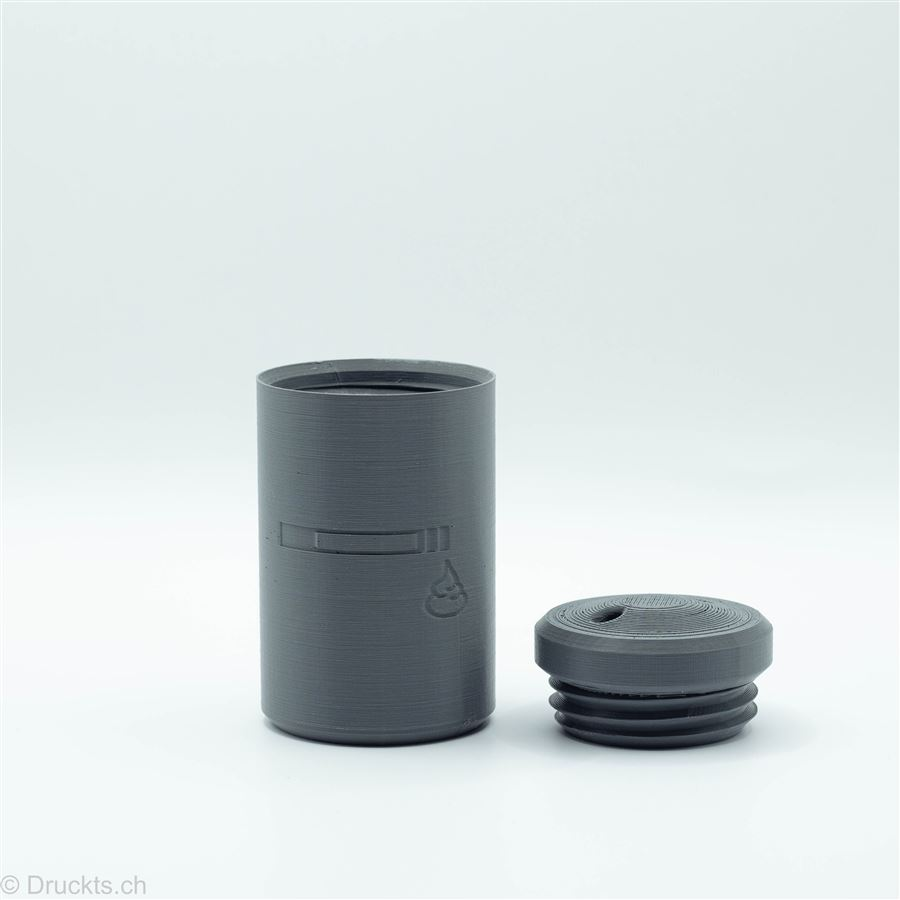
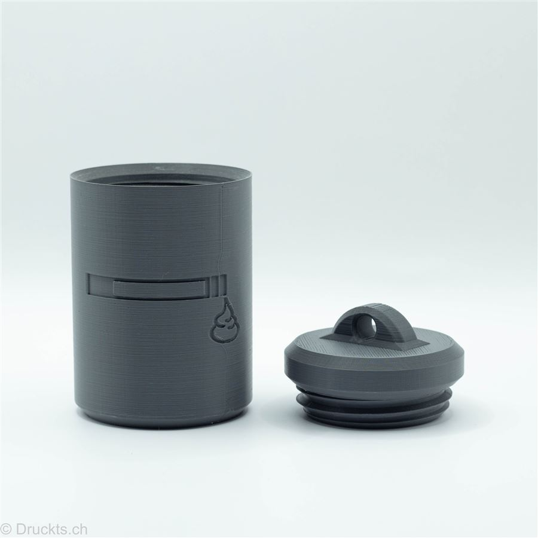
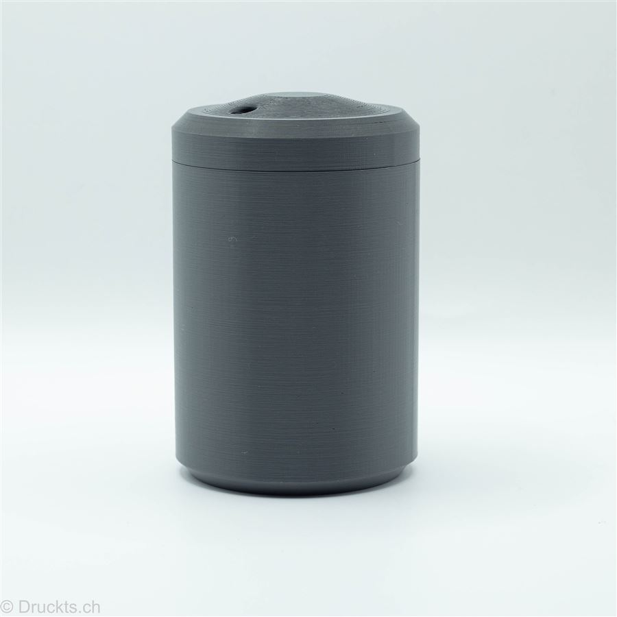
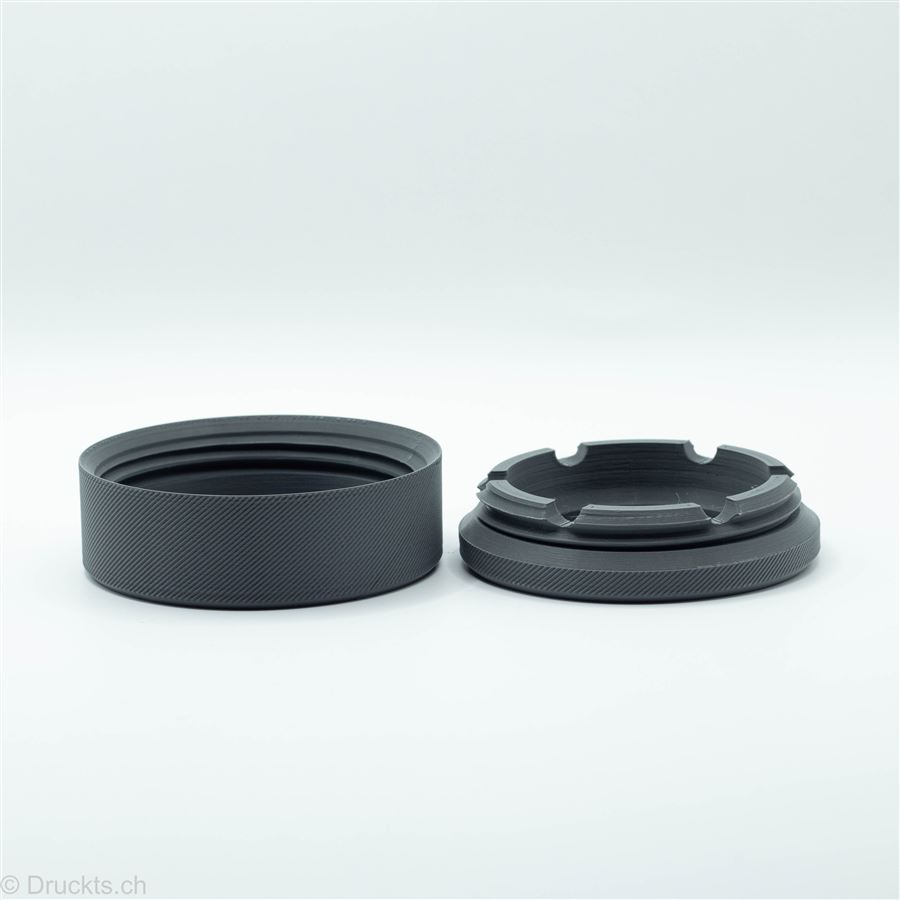
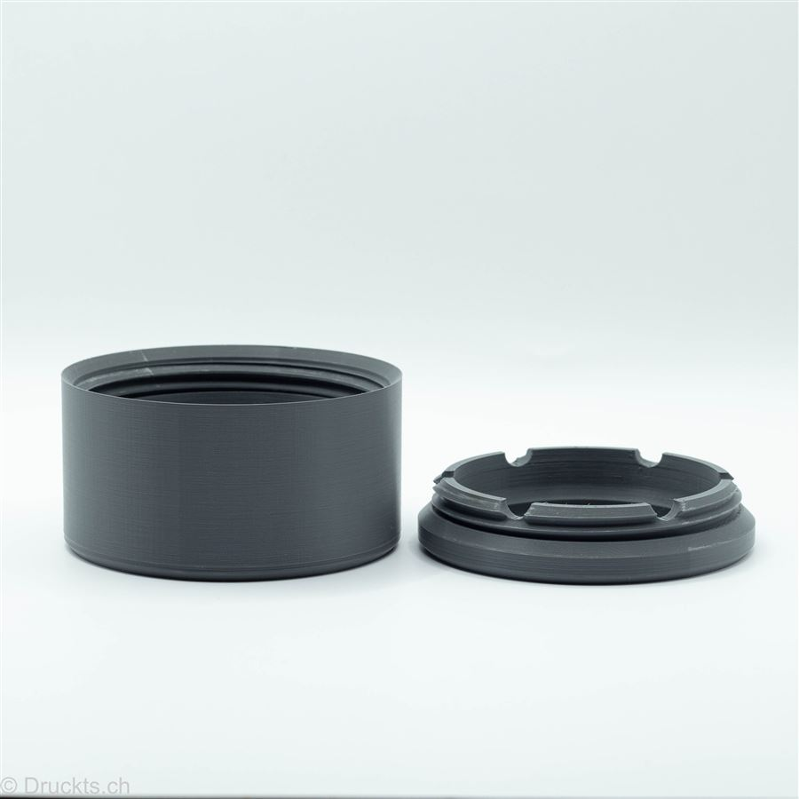
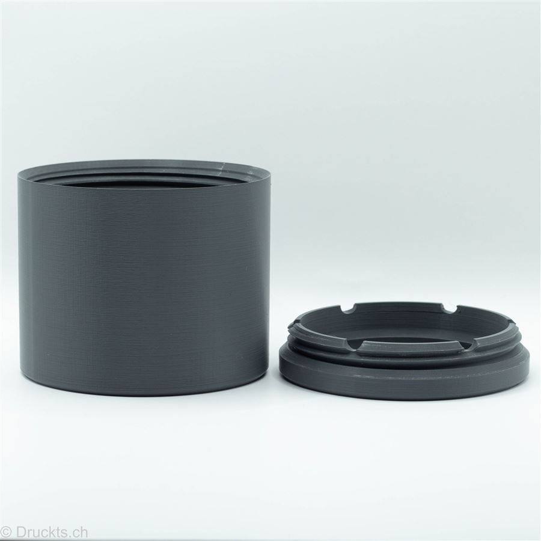

Explorer
Der Kleinste fürs Minimalgepäck – passt in jede Hosentasche.
Details ansehen →Produkte · Sortiment
Ein Prinzip: Asche bleibt drin, Natur bleibt sauber. Alle Modelle aus nachhaltigem PLA, gedruckt mit Solarstrom in Winterthur. Klick auf ein Modell für alle Details.
Ein Modell, drei Grössen: Explorer, Adventurer und Traveller sind derselbe Taschenbecher in S, M und L – dank Henkel überall anzuhängen. Der Puck kommt ohne Henkel aus und passt flach in jede Tasche.

Der Kleinste fürs Minimalgepäck – passt in jede Hosentasche.
Details ansehen →
Die goldene Mitte – der Allrounder für jedes Abenteuer.
Details ansehen →
Der Grösste – viel Volumen für lange Touren und Festivals.
Details ansehen →
Flach und ohne Henkel – verschwindet unauffällig in der Tasche.
Details ansehen →Die Standbecher für Balkon, Garten und Stammtisch – gemacht, um zu bleiben.

Der Klassiker mit herausnehmbarem Einsatz und Ablagekerben.
Details ansehen →
Die grosse Version mit Deckel – schliesst Gerüche zuverlässig ein.
Details ansehen →Schreib uns, welches Modell du möchtest – Preise und Farben erfährst du auf Anfrage. Wir melden uns meist innert 1–2 Werktagen.
Jetzt anfragen